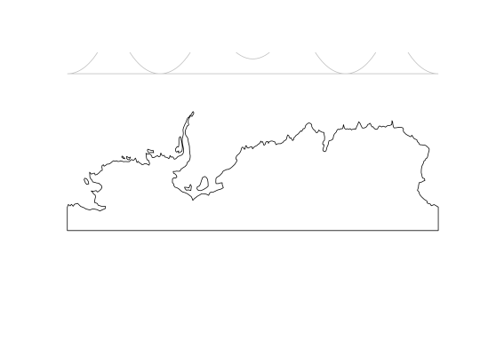

Create a boundary polygon by tracking around coordinates stored in a RasterStack.
romsboundary(cds)
| cds | two-layer Raster |
|---|
The first layer in the stack is treated as the X coordinate, second as Y.
ice_grid_boundary <- romsboundary(ice_coords) plot(antarctica)## does not make sense in this space plot(ice_grid_boundary, add = TRUE, border = "grey")## ok in this one #library(rgdal) # proj4string(ice_grid_boundary) <- CRS("+init=epsg:4326") # pweird <- "+proj=laea +lon_0=147 +lat_0=-42 +ellps=WGS84" # laea_world <- spTransform(antarctica, pweird) # plot(extent(laea_world) + 8e6, type = "n", asp = 1) # plot(laea_world, add = TRUE) # plot(spTransform(ice_grid_boundary, pweird), add = TRUE, border = "darkgrey")